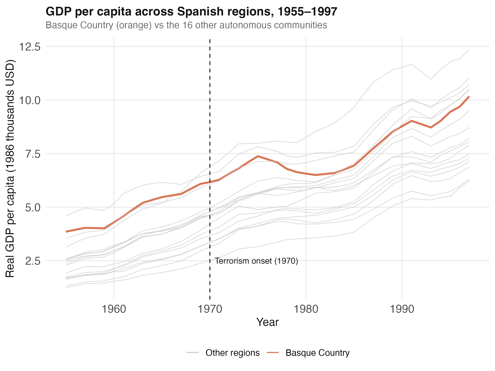
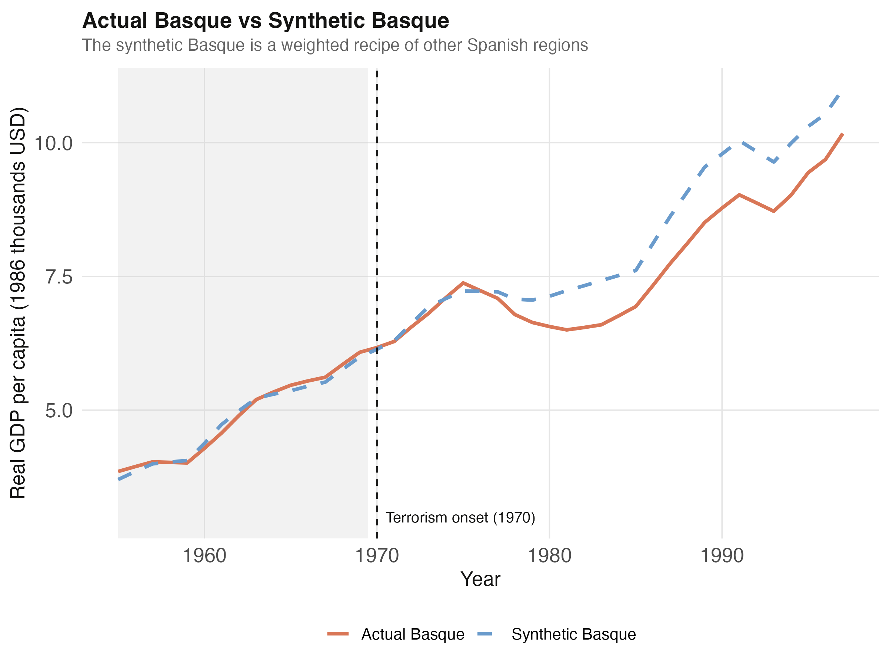
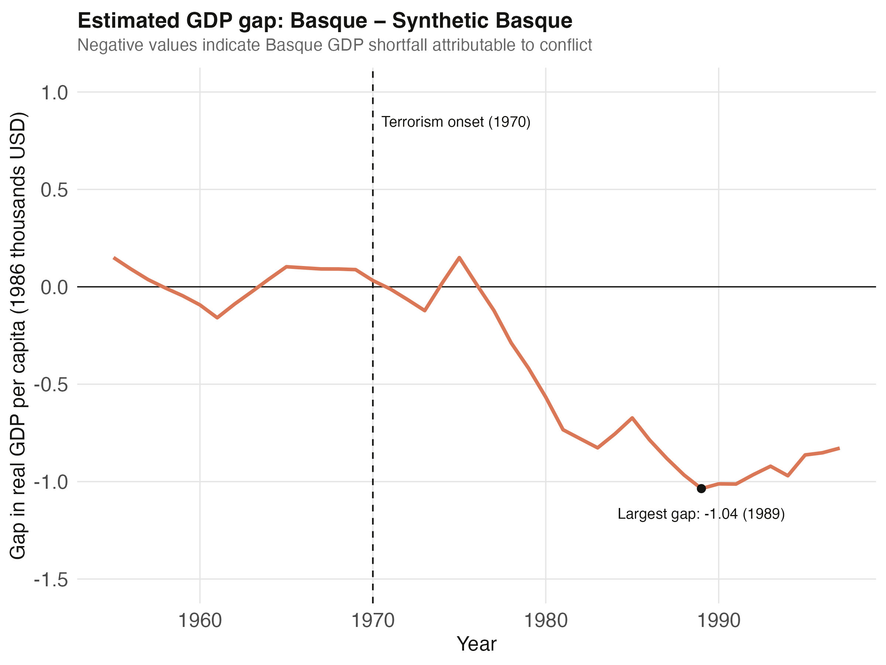
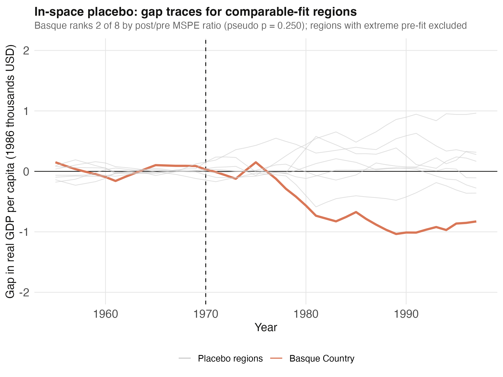

What did conflict cost the Basque Country? A counterfactual built from data
Nagoya University (GSID)
June 11, 2026
Act I
In 1970 the Basque Country entered decades of sustained terrorist activity. The natural question — what did it cost? — has no easy answer.
The path we observed is only half the story. The path without conflict — the counterfactual — was never recorded. How do you measure a road not taken?

GDP per capita across Spanish regions, 1955–1997. The Basque Country (orange) sits among the richest regions throughout — so no single region is a clean comparison.
Act II
\[\alpha_{1t} = Y_{1t} - Y_{1t}^{N}, \quad t \geq 1970\]
Treatment effect = actual GDP minus the no-conflict counterfactual \(Y_{1t}^{N}\).
The fundamental problem: \(Y_{1t}^{N}\) is never observed. Synthetic control estimates it as a weighted average of donor regions.
\[\hat{\alpha}_{1t} = Y_{1t} - \sum_{j=2}^{18} w_j^{*}\, Y_{jt}, \quad t \geq 1970\]
The donor weights \(w_j^{*}\) are non-negative, sum to one, and are picked to match the Basque pre-treatment predictors.
If the pre-1970 match is good, the post-1970 gap is the most plausible estimate of the conflict’s cost.
gdpcap, real GDP per capita in 1986 thousand USD774 rows = 18 regions × 43 years. Pre-treatment window 1955–1969; post-treatment evaluation 1970–1997.
\[W^{*}(V) = \arg\min_{W \in \mathcal{W}} \lVert X_{1} - X_{0}W \rVert_{V}\]
The inner problem finds donor weights \(W\) matching the treated predictor profile \(X_1\), measured in a \(V\)-weighted norm.
\[V^{*} = \arg\min_{V} \, (Z_{1} - Z_{0}W^{*}(V))'(Z_{1} - Z_{0}W^{*}(V))\]
The outer problem picks predictor weights \(V\) so the induced recipe minimizes pre-1970 outcome error.
dataprep() then synth() — the whole estimation is two calls| Diagnostic | Value |
|---|---|
| W weights sum to | 1 |
| Active donors (\(w > 0.01\)) | 2 of 16 |
| Pre-treatment loss \(V\) | 0.0089 |
| Pre-treatment loss \(W\) (MSPE) | 0.2467 |
Sparsity is typical: few donors resemble the treated unit, the rest get zero.
| Region | Weight |
|---|---|
| Cataluna | 0.851 |
| Madrid (Comunidad De) | 0.149 |
| Every other region | 0 |
Basque \(\approx\) 85% Catalonia + 15% Madrid — the only two comparably industrial, urban, wealthy regions.
| Predictor | Treated | Synthetic | Donor mean |
|---|---|---|---|
| Pre-1970 GDP/capita | 5.28 | 5.27 | 3.58 |
| School (primary) % | 85.9 | 82.3 | 80.9 |
| Industry share % | 45.1 | 37.6 | 22.4 |
| Agriculture share % | 6.84 | 6.18 | 21.4 |
| Pop. density 1969 | 247 | 196 | 99.4 |
Outcome-relevant predictors match closely; density is the largest gap.
Act III

Actual Basque (orange) vs synthetic Basque (blue dashed). Pre-treatment window 1955–1969 shaded; the vertical line marks conflict onset in 1970.

Estimated GDP gap (Basque minus synthetic Basque). Essentially zero before 1970, then negative — the deepest deficit of −1.04 thousand USD falls in 1989.
−0.580
\(\widehat{\mathrm{ATT}}\), average 1970–1997 (thousand 1986 USD/capita) · roughly an 8% income shortfall
| Catalonia placebo | Value |
|---|---|
| Pre-1970 MSPE | 0.006 |
| Post-1970 MSPE | 0.391 |
| Post/pre ratio | 64.7 |
Comparable to Basque’s own ratio of 60.1 — one placebo run has limited inferential power.

In-space placebo gap traces for the 8 comparable-fit regions. The Basque (orange) ranks 2 of 8 by post/pre MSPE ratio — at the loud edge of the chorus, not far outside it.
Objection. If Catalonia tops the placebo ranking and is also 85% of the synthetic recipe, isn’t the Basque “effect” just the same Spanish industrial transition?
Response. A fair caveat. When a synthetic is built from one dominant donor, that donor naturally scores high in its own placebo — it has no close substitute to rebuild it. The result is consistent with a sizeable cost (rank 2 of 8, an 8% shortfall) but the small 16-region pool limits resolution (smallest pseudo p = 0.125). Report placebo and donor weights together, not separately.